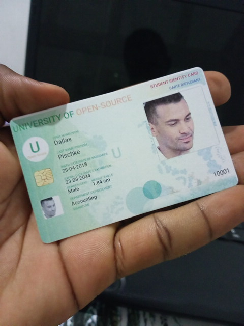
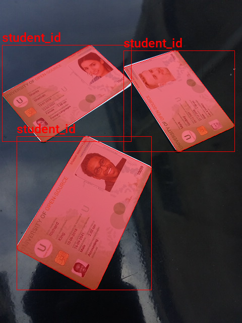
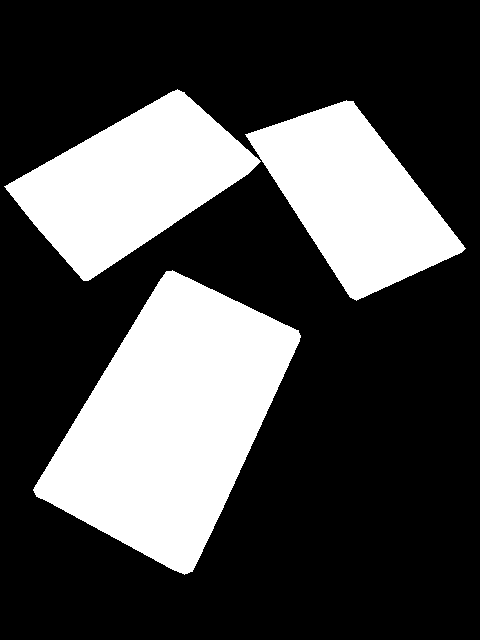
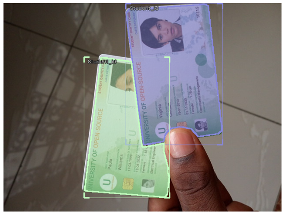
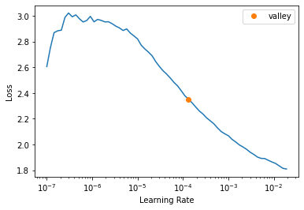
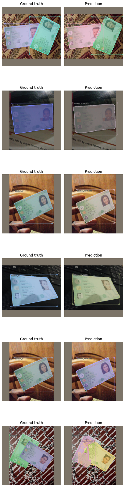
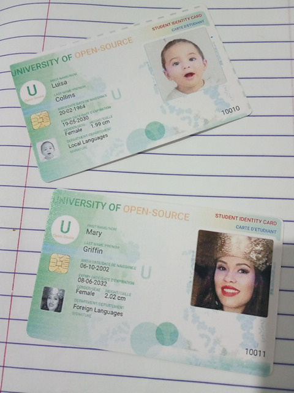
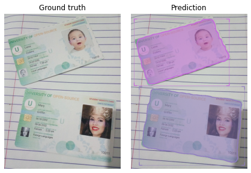
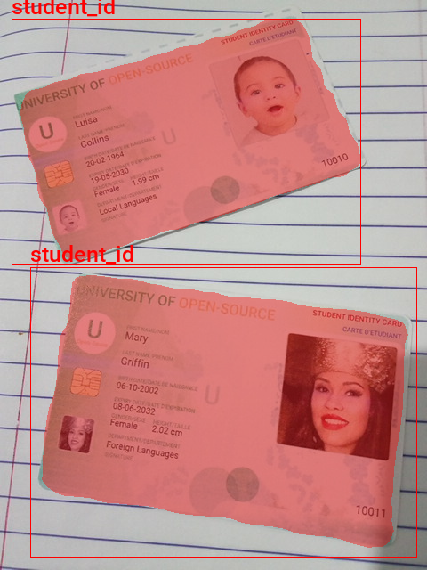

Training a Mask R-CNN Model on a Custom Dataset With IceVision
- Overview
- Setup Conda Environment
- Import Dependencies
- Download the Dataset
- Inspect the Dataset
- Create Dataset Parser
- Define DataLoader Objects
- Finetune the Model
- Save Model Checkpoint
- Perform Inference with Checkpoint
- Inspect Raw Model Output
- Export Model to ONNX
- Verify ONNX Inference
- Define Post-processing Steps
- Summary
Tutorial Links
- Part 1: Train a Mask R-CNN model on a custom dataset using the IceVision library and perform inference with ONNX Runtime.
- GitHub Repository
Overview
This tutorial shows how to train a Mask R-CNN model on a custom dataset using the IceVision library. It also demonstrates how to export the trained model to the ONNX format and perform inference using ONNX Runtime.
We will use a pre-existing dataset of annotated student ID card images for training. I plan to show how to create a custom dataset from scratch in a future post, including how to annotate the images and prepare them for training.
- Dataset Source: pytorch-for-information-extraction

You can find links to view the training code and run it on Google Colab and Kaggle below.
| Jupyter Notebook | Colab | Kaggle |
|---|---|---|
| GitHub Repository | Open In Colab | Kaggle |
Update
May 17, 2023: Google Colab and Kaggle Notebooks now use an updated Python version that conflicts with this tutorial’s package versions. Please create a local conda environment to run the tutorial code.
Setup Conda Environment
I recommend using a dedicated virtual environment when working with the IceVision library, as it has specific dependency requirements that can conflict with other libraries or versions. The easiest way to create a virtual environment for IceVision is using Conda. Below are the steps to create a Conda environment and activate it. Be sure to follow these steps in the provided order to ensure the environment works for IceVision.
Important: IceVision currently only supports Linux/macOS. Try using WSL (Windows Subsystem for Linux) if training locally on Windows.
Install CUDA Toolkit
If you plan to run the training code on your local machine, you might need to install the CUDA Toolkit. CUDA requires an Nvidia GPU, and version 11.1.0 of the toolkit is available at the link below. Google Colab and Kaggle Notebooks already have CUDA installed.
Conda environment setup steps
# create a new conda environment
conda create --name icevision python==3.8
# activate the environment
conda activate icevision
# install PyTorch and torchvision
pip install torch==1.10.0+cu111 torchvision==0.11.1+cu111 -f https://download.pytorch.org/whl/torch_stable.html
# install mmcv-full
pip install mmcv-full==1.3.17 -f https://download.openmmlab.com/mmcv/dist/cu111/torch1.10.0/index.html
# install mmdet
pip install mmdet==2.17.0
# install icevision
pip install icevision==0.11.0
# install icedata
pip install icedata==0.5.1
# install setuptools
pip install setuptools==59.5.0
# install jupyter
pip install jupyter
# install onnxruntime
pip install onnxruntimeThe icevision package provides the necessary functionality for data curation, data transforms, and training loops that we will use to train the model. Additionally, the icedata package provides the functionality we need to create a custom parser for reading the dataset.
Colab and Kaggle Setup Requirements
When running the training code on Google Colab and Kaggle Notebooks, it is necessary to uninstall specific packages to avoid conflicts with IceVision and its dependencies. The platform-specific setup steps are at the top of the notebooks linked above. Follow these instructions before running the code to ensure it runs smoothly on these platforms.
Import Dependencies
We will start by importing the IceVision library and configuring Pandas. When you import the IceVision library for the first time, it will automatically download some additional resources that it needs to function correctly.
Import IceVision library
# Import all the necessary modules from the icevision package
from icevision.all import *Import and configure Pandas
# Import the pandas package
import pandas as pd
# Set the max column width to None
pd.set_option('max_colwidth', None)
# Set the max number of rows and columns to None
pd.set_option('display.max_rows', None)
pd.set_option('display.max_columns', None)Download the Dataset
The sample dataset we will use for training is available on GitHub, so all you need to do is clone the repository to access it.
Clone dataset repository
# Clone the dataset repository from GitHub
!git clone https://github.com/MbassiJaphet/pytorch-for-information-extraction.gitInspect the Dataset
After the dataset finishes downloading, you can inspect its contents by navigating to the code/datasets/detection/student-id/ subfolder, where you will find the image and annotation files. In this step, we will get the file paths for the images and annotations and inspect one of the training images. That will give us a better understanding of the dataset and its structure.
Define path to dataset
# Set the path to the dataset directory
data_dir = Path('./pytorch-for-information-extraction/code/datasets/detection/student-id')
# Set the dataset name
dataset_name = data_dir.nameEach image in the dataset has a corresponding JSON file that contains its annotation data.
Inspect dataset contents
# Get a list of the files in the dataset directory and display them using a DataFrame
pd.DataFrame(list(data_dir.ls())).head()| 0 | |
|---|---|
| 0 | pytorch-for-information-extraction/code/datasets/detection/student-id/10001.jpg |
| 1 | pytorch-for-information-extraction/code/datasets/detection/student-id/10001.json |
| 2 | pytorch-for-information-extraction/code/datasets/detection/student-id/10002.jpg |
| 3 | pytorch-for-information-extraction/code/datasets/detection/student-id/10002.json |
| 4 | pytorch-for-information-extraction/code/datasets/detection/student-id/10003.jpg |
Get image file paths
# Get the file paths for all the images in the dataset
files = get_image_files(data_dir)
# Count the number of files
len(files)150Inspect one of the training images
# Import the PIL package
import PIL
# Open the first image in the dataset
img = PIL.Image.open(files[0]).convert('RGB')
# Print the dimensions of the image
print(f"Image Dims: {img.size}")
# Display the image
img Image Dims: (480, 640)
To make it easier to work with the dataset, we will create a dictionary that maps image names to file paths. The dictionary will allow us to retrieve the file path for a given image efficiently.
Create a dictionary that maps image names to file paths
# Create a dictionary that maps image names to file paths
img_dict = {file.name.split('.')[0] : file for file in files}
# Display the first item in the dictionary as a DataFrame
pd.DataFrame(list(img_dict.items())[0]).transpose()| 0 | 1 | |
|---|---|---|
| 0 | 10001 | pytorch-for-information-extraction/code/datasets/detection/student-id/10001.jpg |
Get list of annotation file paths
# Import the os and glob modules
import os
from glob import glob# Get a list of the annotation file paths in the dataset directory
annotation_paths = glob(os.path.join(data_dir, "*.json"))
# Display the list of annotation file paths as a DataFrame
pd.DataFrame(annotation_paths).head()| 0 | |
|---|---|
| 0 | pytorch-for-information-extraction/code/datasets/detection/student-id/10001.json |
| 1 | pytorch-for-information-extraction/code/datasets/detection/student-id/10002.json |
| 2 | pytorch-for-information-extraction/code/datasets/detection/student-id/10003.json |
| 3 | pytorch-for-information-extraction/code/datasets/detection/student-id/10004.json |
| 4 | pytorch-for-information-extraction/code/datasets/detection/student-id/10005.json |
After getting the list of annotation file paths, we will create an annotation DataFrame that contains all of the annotation data for the dataset. This DataFrame will allow us to manipulate and query the annotations more easily.
Create annotation dataframe
# Read the JSON files using Pandas and concatenate the resulting dataframes
# into a single dataframe
cls_dataframes = (pd.read_json(f, orient='index').transpose() for f in annotation_paths)
annotation_df = pd.concat(cls_dataframes, ignore_index=False)
# Assign the image file name as the index for each row
annotation_df['index'] = annotation_df.apply(lambda row: row['imagePath'].split('.')[0], axis=1)
annotation_df = annotation_df.set_index('index')
# Keep only the rows that have corresponding image files
annotation_df = annotation_df.loc[list(img_dict.keys())]
# View the first few rows of the dataframe
annotation_df.head()| version | flags | shapes | lineColor | fillColor | imagePath | imageData | imageHeight | imageWidth | |
|---|---|---|---|---|---|---|---|---|---|
| index | |||||||||
| 10001 | 3.21.1 | {} | [{‘label’: ‘student_id’, ‘line_color’: None, ‘fill_color’: None, ‘points’: [[19.190476190476204, 244.76190476190476], [23.0, 233.33333333333331], [385.8571428571428, 132.38095238095238], [400.1428571428571, 135.23809523809524], [468.71428571428567, 353.3333333333333], [466.80952380952374, 362.85714285714283], [97.28571428571428, 478.0952380952381], [81.09523809523807, 474.2857142857143]], ‘shape_type’: ‘polygon’, ‘flags’: {}}] | [0, 255, 0, 128] | [255, 0, 0, 128] | 10001.jpg | 640 | 480 | |
| 10002 | 3.21.1 | {} | [{‘label’: ‘student_id’, ‘line_color’: None, ‘fill_color’: None, ‘points’: [[21.095238095238102, 183.33333333333334], [231.41269841269843, 88.09523809523809], [450.46031746031747, 347.6190476190476], [475.06349206349205, 376.1904761904762], [478.2380952380952, 388.8888888888889], [301.25396825396825, 532.5396825396825], [271.0952380952381, 556.3492063492064], [255.22222222222223, 541.2698412698413], [242.52380952380952, 534.9206349206349], [25.85714285714286, 199.20634920634922]], ‘shape_type’: ‘polygon’, ‘flags’: {}}] | [0, 255, 0, 128] | [255, 0, 0, 128] | 10002.jpg | 640 | 480 | |
| 10003 | 3.21.1 | {} | [{‘label’: ‘student_id’, ‘line_color’: None, ‘fill_color’: None, ‘points’: [[138.23809523809524, 71.42857142857143], [407.7619047619047, 31.428571428571427], [418.2380952380952, 39.047619047619044], [422.04761904761904, 539.047619047619], [407.7619047619047, 552.3809523809524], [112.52380952380952, 519.047619047619], [98.23809523809524, 505.71428571428567]], ‘shape_type’: ‘polygon’, ‘flags’: {}}] | [0, 255, 0, 128] | [255, 0, 0, 128] | 10003.jpg | 640 | 480 | |
| 10004 | 3.21.1 | {} | [{‘label’: ‘student_id’, ‘line_color’: None, ‘fill_color’: None, ‘points’: [[119.20529801324503, 218.54304635761588], [440.3973509933775, 184.7682119205298], [445.0331125827814, 190.72847682119206], [391.3907284768212, 366.2251655629139], [384.7682119205298, 372.18543046357615], [250.33112582781456, 401.3245033112583], [82.11920529801324, 446.3576158940397], [76.82119205298014, 441.72185430463577], [49.66887417218544, 239.73509933774835], [107.28476821192052, 228.47682119205297]], ‘shape_type’: ‘polygon’, ‘flags’: {}}] | [0, 255, 0, 128] | [255, 0, 0, 128] | 10004.jpg | 640 | 480 | |
| 10005 | 3.21.1 | {} | [{‘label’: ‘student_id’, ‘line_color’: None, ‘fill_color’: None, ‘points’: [[41.18840579710144, 218.8405797101449], [41.18840579710144, 209.42028985507244], [52.78260869565216, 201.44927536231882], [224.52173913043475, 142.75362318840578], [359.30434782608694, 89.85507246376811], [367.99999999999994, 92.02898550724638], [462.2028985507246, 275.3623188405797], [369.4492753623188, 348.5507246376811], [199.88405797101444, 472.463768115942], [191.91304347826082, 471.01449275362313]], ‘shape_type’: ‘polygon’, ‘flags’: {}}] | [0, 255, 0, 128] | [255, 0, 0, 128] | 10005.jpg | 640 | 480 |
We can retrieve the annotation data for a specific image file using its name.
Inspect annotation data for sample image
# Set the file ID for the image we want to inspect
file_id = files[56].name.split('.')[0]
# Print the file ID
file_id'10057'The shapes entry contains the point coordinates to draw the image masks. We will also use this information to construct the associated bounding boxes. This particular entry has point coordinates for two image masks.
# Get the annotation data for the specified image file
annotation_df.loc[file_id].to_frame()| 10057 | |
|---|---|
| version | 3.21.1 |
| flags | {} |
| shapes | [{‘label’: ‘student_id’, ‘line_color’: None, ‘fill_color’: None, ‘points’: [[4.703296703296701, 186.8131868131868], [172.28571428571428, 91.20879120879121], [177.23076923076923, 89.56043956043956], [183.82417582417582, 92.85714285714285], [260.19780219780216, 161.53846153846152], [248.65934065934067, 173.07692307692307], [99.75824175824175, 273.6263736263736], [88.2197802197802, 280.7692307692308], [83.27472527472527, 280.7692307692308], [35.472527472527474, 225.82417582417582]], ‘shape_type’: ‘polygon’, ‘flags’: {}}, {‘label’: ‘student_id’, ‘line_color’: None, ‘fill_color’: None, ‘points’: [[245.36263736263737, 134.06593406593407], [346.46153846153845, 100.0], [352.5054945054945, 101.64835164835165], [465.1428571428571, 248.9010989010989], [461.8461538461538, 252.1978021978022], [356.35164835164835, 300.5494505494505], [350.3076923076923, 297.8021978021978]], ‘shape_type’: ‘polygon’, ‘flags’: {}}, {‘label’: ‘student_id’, ‘line_color’: None, ‘fill_color’: None, ‘points’: [[33.27472527472527, 489.010989010989], [159.64835164835165, 281.3186813186813], [166.7912087912088, 271.97802197802196], [172.28571428571428, 270.3296703296703], [297.010989010989, 330.2197802197802], [300.3076923076923, 335.16483516483515], [299.2087912087912, 340.65934065934067], [223.38461538461536, 506.5934065934066], [192.6153846153846, 571.4285714285714], [184.9230769230769, 574.1758241758241], [172.28571428571428, 569.2307692307692], [47.56043956043956, 501.0989010989011], [36.021978021978015, 496.15384615384613]], ‘shape_type’: ‘polygon’, ‘flags’: {}}] |
| lineColor | [0, 255, 0, 128] |
| fillColor | [255, 0, 0, 128] |
| imagePath | 10057.jpg |
| imageData | |
| imageHeight | 640 |
| imageWidth | 480 |
We need a font file to annotate the images with class labels. We can download one from Google Fonts.
Download font file
# Set the font file name
font_file = 'KFOlCnqEu92Fr1MmEU9vAw.ttf'
# If the font file doesn't exist, download it
if not os.path.exists(font_file):
!wget https://fonts.gstatic.com/s/roboto/v30/$font_fileAnnotate sample image
# Import the ImageDraw class from the PIL package
from PIL import ImageDraw# Open the image file
img = PIL.Image.open(img_dict[file_id]).convert('RGB')
# Get the dimensions of the image
width, height = img.size
# Create a copy of the image to annotate
annotated_img = img.copy()
# Create a blank image to store the mask
mask_img = PIL.Image.new('L', img.size, 0)
# Create a drawing object for the annotated image
draw = ImageDraw.Draw(annotated_img)
# Set the font size for the object labels
fnt_size = 25
# Get the annotation data for the specified image
annotation = annotation_df.loc[file_id]
# Iterate through annotations for sample image
for i in range(len(annotation['shapes'])):
# Extract mask polygon coords
points = np.array(annotation['shapes'][i]['points'])
# Extract bounding box coords
x_min, y_min = points.min(axis=0)
x_max, y_max = points.max(axis=0)
# Draw bounding box on sample image
shape = (x_min, y_min, x_max, y_max)
draw.rectangle(shape, outline='red')
# Draw segmentation mask on sample image
xy = [(p[0],p[1]) for p in points]
ImageDraw.Draw(annotated_img, 'RGBA').polygon(xy, fill=(255, 0, 0, 125), outline ="red")
# Draw segmentation mask on blank image
ImageDraw.Draw(mask_img, 'L').polygon(xy, fill=(255))
# Draw object label on sample image
fnt = PIL.ImageFont.truetype(font_file, fnt_size)
label = annotation['shapes'][i]['label']
draw.multiline_text((x_min, y_min-fnt_size-5), f"{label}", font=fnt, fill='red')
# Print the dimensions of the annotated image
print(annotated_img.size)
# Show the annotated image
annotated_img(480, 640)
Display segmentation mask
mask_img
We need to provide IceVision with a class map that maps index values to unique class names.
Create a class map
# Explode the 'shapes' column in the annotation_df dataframe
# Convert the resulting series to a dataframe and rename the 'shapes' column to 'shapes'
# Apply the pandas Series function to the 'shapes' column of the dataframe
shapes_df = annotation_df['shapes'].explode().to_frame().shapes.apply(pd.Series)
# View the first few rows of the resulting dataframe
shapes_df.head()| label | line_color | fill_color | points | shape_type | flags | |
|---|---|---|---|---|---|---|
| index | ||||||
| 10001 | student_id | None | None | [[19.190476190476204, 244.76190476190476], [23.0, 233.33333333333331], [385.8571428571428, 132.38095238095238], [400.1428571428571, 135.23809523809524], [468.71428571428567, 353.3333333333333], [466.80952380952374, 362.85714285714283], [97.28571428571428, 478.0952380952381], [81.09523809523807, 474.2857142857143]] | polygon | {} |
| 10002 | student_id | None | None | [[21.095238095238102, 183.33333333333334], [231.41269841269843, 88.09523809523809], [450.46031746031747, 347.6190476190476], [475.06349206349205, 376.1904761904762], [478.2380952380952, 388.8888888888889], [301.25396825396825, 532.5396825396825], [271.0952380952381, 556.3492063492064], [255.22222222222223, 541.2698412698413], [242.52380952380952, 534.9206349206349], [25.85714285714286, 199.20634920634922]] | polygon | {} |
| 10003 | student_id | None | None | [[138.23809523809524, 71.42857142857143], [407.7619047619047, 31.428571428571427], [418.2380952380952, 39.047619047619044], [422.04761904761904, 539.047619047619], [407.7619047619047, 552.3809523809524], [112.52380952380952, 519.047619047619], [98.23809523809524, 505.71428571428567]] | polygon | {} |
| 10004 | student_id | None | None | [[119.20529801324503, 218.54304635761588], [440.3973509933775, 184.7682119205298], [445.0331125827814, 190.72847682119206], [391.3907284768212, 366.2251655629139], [384.7682119205298, 372.18543046357615], [250.33112582781456, 401.3245033112583], [82.11920529801324, 446.3576158940397], [76.82119205298014, 441.72185430463577], [49.66887417218544, 239.73509933774835], [107.28476821192052, 228.47682119205297]] | polygon | {} |
| 10005 | student_id | None | None | [[41.18840579710144, 218.8405797101449], [41.18840579710144, 209.42028985507244], [52.78260869565216, 201.44927536231882], [224.52173913043475, 142.75362318840578], [359.30434782608694, 89.85507246376811], [367.99999999999994, 92.02898550724638], [462.2028985507246, 275.3623188405797], [369.4492753623188, 348.5507246376811], [199.88405797101444, 472.463768115942], [191.91304347826082, 471.01449275362313]] | polygon | {} |
# Create a list of unique labels from the 'label' column of the shapes_df dataframe
labels = shapes_df['label'].unique().tolist()
# Print the list of labels
labels['student_id']# Create a ClassMap object with the list of labels
class_map = ClassMap(labels)
# Print the ClassMap object
class_map<ClassMap: {'background': 0, 'student_id': 1}>Create Dataset Parser
To create a custom dataset parser for instance segmentation, we can use the template for an instance segmentation record and the template for an instance segmentation parser.
View template for an instance segmentation record
# Create an InstanceSegmentationRecord object
template_record = InstanceSegmentationRecord()
# Print the InstanceSegmentationRecord object
template_recordBaseRecord
common:
- Image size None
- Filepath: None
- Img: None
- Record ID: None
detection:
- Class Map: None
- Labels: []
- BBoxes: []
- masks: []
- mask_array: NoneView template for an instance segmentation parser
# Generate a template record for an instance segmentation dataset using the InstanceSegmentationRecord object
Parser.generate_template(template_record)class MyParser(Parser):
def __init__(self, template_record):
super().__init__(template_record=template_record)
def __iter__(self) -> Any:
def __len__(self) -> int:
def record_id(self, o: Any) -> Hashable:
def parse_fields(self, o: Any, record: BaseRecord, is_new: bool):
record.set_img_size(<ImgSize>)
record.set_filepath(<Union[str, Path]>)
record.detection.set_class_map(<ClassMap>)
record.detection.add_labels(<Sequence[Hashable]>)
record.detection.add_bboxes(<Sequence[BBox]>)
record.detection.add_masks(<Sequence[Mask]>)Define custom parser class
class StudentIDParser(Parser):
# Initialize a StudentIDParser object
def __init__(self, template_record, annotations_df, img_dict, class_map):
# Call the __init__ method of the parent class
super().__init__(template_record=template_record)
# Set the instance variables to the values of the corresponding arguments
self.img_dict = img_dict
self.df = annotations_df
self.class_map = class_map
# Return an iterator over the rows of the DataFrame
def __iter__(self):
for o in self.df.itertuples(): yield o
# Return the number of rows in the DataFrame
def __len__(self):
return len(self.df)
# Return the index of the current row of the DataFrame
def record_id(self, o: Any) -> Hashable:
return o.Index
# Return the image width and height
def image_width_height(self, o) -> Tuple[int, int]:
return self._size[:2]
# Parse the data from the DataFrame and populate the record object
def parse_fields(self, o, record, is_new):
# Get the file path of the image from the img_dict dictionary
filepath = self.img_dict[o.Index]
# Open the image and get its width and height
width, height = PIL.Image.open(filepath).convert('RGB').size
# Set the image size and file path of the record object
record.set_img_size([width, height])
record.set_filepath(Path(filepath))
# Set the class map of the record object's detection attribute
record.detection.set_class_map(self.class_map)
# Initialize empty lists for labels, bounding boxes, and masks
labels = []
bbox_list = []
mask_list = []
# Iterate over the shapes in the current row of the DataFrame
for i in range(len(o.shapes)):
# Get the points of the shape
points = np.array(o.shapes[i]['points'])
# Calculate the minimum and maximum x- and y-coordinates of the points
x_min, y_min = points.min(axis=0)
x_max, y_max = points.max(axis=0)
# Add the label to the labels list
labels.append(o.shapes[i]['label'])
# Create a bounding box object from the coordinates and add it to the bbox_list
bbox_list.append(BBox.from_xyxy(x_min, y_min, x_max, y_max))
# Create a mask image and draw the shape on it
mask_img = PIL.Image.new('L', (width, height), 0)
xy = [(p[0],p[1]) for p in points]
ImageDraw.Draw(mask_img, 'L').polygon(xy, fill=(1))
# Convert the mask image to a numpy array and add it to the mask_list
mask_array = np.array(mask_img).clip(0,1)
mask_list.append(MaskArray(mask_array))
# Add the labels, bounding boxes, and masks to the record object
record.detection.add_labels(labels)
record.detection.add_bboxes(bbox_list)
record.detection.add_masks(mask_list)We can then create a parser object using the custom parser class.
Create a custom parser object
# Create a StudentIDParser object
parser = StudentIDParser(template_record, annotation_df, img_dict, class_map)
# Return the length of the parser object, which is the number of rows in the DataFrame
len(parser)150We use the parser object to parse annotations and create records.
Parse annotations to create records
# Create a RandomSplitter object
data_splitter = RandomSplitter([0.8, 0.2])
# Use the RandomSplitter to split the data into training and validation sets
train_records, valid_records = parser.parse(data_splitter)
# train_records, valid_records = parser.parse(data_splitter, cache_filepath=f'{dataset_name}-cache.pkl')Let’s save the class labels to use later during inference.
Export class labels
# Import the json module
import json
# Create a dictionary containing the class labels
class_labels = {"classes": parser.class_map.get_classes()}
# Generate a file name for the class labels file
class_labels_file_name = f"{data_dir.name}-classes.json"
# Open the class labels file for writing and write the class labels to it
with open(class_labels_file_name, "w") as write_file:
json.dump(class_labels, write_file)
# Return the class labels and file name
class_labels, class_labels_file_name({'classes': ['background', 'student_id']}, 'student-id-classes.json')Finally, we can inspect the training records to ensure the parser works correctly.
Inspect training records
# Get the first element of the train_records object
train_records[0]BaseRecord
common:
- Image size [640, 480]
- Filepath: pytorch-for-information-extraction/code/datasets/detection/student-id/10115.jpg
- Img: None
- Record ID: 10115
detection:
- Class Map: <ClassMap: {'background': 0, 'student_id': 1}>
- Labels: [1, 1]
- BBoxes: [<BBox (xmin:281.57142857142856, ymin:1.428571428571428, xmax:504.42857142857133, ymax:326.4285714285714)>, <BBox (xmin:185.1428571428571, ymin:124.28571428571428, xmax:382.99999999999994, ymax:448.57142857142856)>]
- masks: [<icevision.core.mask.MaskArray object at 0x7f521f95df10>, <icevision.core.mask.MaskArray object at 0x7f521f95da90>]
- mask_array: None# Annotate the first sample of the train_records object
show_record(train_records[0], figsize = (10,10), display_label=True )
# Annotate the second to fourth samples of the train_records list
show_records(train_records[1:4], ncols=3,display_label=True)Define DataLoader Objects
To define DataLoader objects for our task, we must first set the desired input resolution for the model.
Define input resolution
# Set the image size to 512
image_size = 512
# Set the presize to 1024
presize = 1024Next, we create a list of transformations to apply to the input images, such as resizing, padding, and normalization. IceVision also applies augmentations, such as horizontal flipping, to improve model performance.
Define Transforms
# Define the data transforms for the training and validation sets
train_tfms = tfms.A.Adapter([*tfms.A.aug_tfms(size=image_size, presize=presize), tfms.A.Normalize()])
valid_tfms = tfms.A.Adapter([*tfms.A.resize_and_pad(image_size), tfms.A.Normalize()])We then get the mean and standard deviation of the dataset used to train the original model to normalize the input images.
Get normalization stats
# Get the mean of the Normalize() transformation
mean = tfms.A.Normalize().mean
# Get the standard deviation of the Normalize() transformation
std = tfms.A.Normalize().std
# Print the mean and standard deviation
mean, std((0.485, 0.456, 0.406), (0.229, 0.224, 0.225))Next, we create dataset objects for the training and validation datasets using the defined transforms and normalization stats.
Define Datasets
# Create a Dataset object for the training set
train_ds = Dataset(train_records, train_tfms)
# Create a Dataset object for the validation set
valid_ds = Dataset(valid_records, valid_tfms)
# Return the Dataset objects
train_ds, valid_ds(<Dataset with 120 items>, <Dataset with 30 items>)We can apply the image augmentations to a sample training image to demonstrate the effects of data augmentation.
Apply augmentations to a training sample
# Get three samples from the training set
samples = [train_ds[0] for _ in range(3)]
# Show the samples
show_samples(samples, ncols=3)Once the datasets are defined, we can specify Mask R-CNN as the model type for training and inference.
Define model type
# Set the model type to Mask R-CNN
model_type = models.torchvision.mask_rcnnDefine backbone
# Create a ResNet50-FPN backbone for the model
backbone = model_type.backbones.resnet50_fpn()Define batch size
# Set the batch size
bs = 4Note: Adjust the batch size based on the available GPU memory.
Finally, we create DataLoader objects for the training and validation datasets using the defined batch size. We use these objects to load batches of data for training and evaluation.
Define DataLoaders
# Create a DataLoader for the training set
train_dl = model_type.train_dl(train_ds, batch_size=bs, num_workers=2, shuffle=True)
# Create a DataLoader for the validation set
valid_dl = model_type.valid_dl(valid_ds, batch_size=bs, num_workers=2, shuffle=False)Note: Be careful when increasing the number of workers. There is a bug that significantly increases system memory usage with more workers.
# Get the first mini-batch from the validation set
valid_batch = first(valid_dl)# Unpack the data from the first mini-batch of the validation set
(valid_images, valid_labels), valid_records = valid_batch# Show a mini-batch of data from the validation set
model_type.show_batch(first(valid_dl), ncols=4)Finetune the Model
To finetune the Mask-RCNN model, we must first instantiate the model and define metrics to track during training.
Instantiate the model
# Create a Mask R-CNN model
model = model_type.model(backbone=backbone, num_classes=parser.class_map.num_classes)Define metrics
# Define a list of metrics to evaluate the model
metrics = [COCOMetric(metric_type=COCOMetricType.mask)]We can then create a Learner object to find the learning rate and handle the training loop.
Define Learner object
# Create a fastai learner object to train and evaluate the Mask R-CNN model
learn = model_type.fastai.learner(dls=[train_dl, valid_dl], model=model, metrics=metrics)Find learning rate
# Use the learning rate finder to find a good learning rate for the Mask R-CNN model
suggested_lrs = learn.lr_find()
Define learning rate
# Use the optimal learning rate identified by the learning rate finder
lr = suggested_lrs.valley*3
lr 0.00039547700725961477Define number of epochs
# Set the number of epochs to train the Mask R-CNN model
epochs = 60After defining the training parameters, we can finetune the model by training it on the training dataset and evaluating it on the validation dataset.
Finetune model
# Train the Mask R-CNN model
learn.fine_tune(epochs, lr, freeze_epochs=1)| epoch | train_loss | valid_loss | COCOMetric | time |
|---|---|---|---|---|
| 0 | 1.526101 | 1.136230 | 0.000000 | 00:05 |
| epoch | train_loss | valid_loss | COCOMetric | time |
|---|---|---|---|---|
| 0 | 1.113099 | 0.948657 | 0.000000 | 00:10 |
| 1 | 0.879729 | 0.561887 | 0.000000 | 00:08 |
| 2 | 0.661906 | 0.404916 | 0.000000 | 00:08 |
| 3 | 0.528782 | 0.345191 | 0.000000 | 00:08 |
| 4 | 0.464688 | 0.352018 | 0.000000 | 00:08 |
| 5 | 0.418978 | 0.320372 | 0.000000 | 00:08 |
| 6 | 0.376626 | 0.295002 | 0.000000 | 00:08 |
| 7 | 0.340059 | 0.309611 | 0.000000 | 00:08 |
| 8 | 0.316866 | 0.267806 | 0.000000 | 00:08 |
| 9 | 0.295634 | 0.275406 | 0.000000 | 00:08 |
| 10 | 0.282974 | 0.263774 | 0.000000 | 00:08 |
| 11 | 0.275979 | 0.254877 | 0.000000 | 00:08 |
| 12 | 0.266656 | 0.237095 | 0.000000 | 00:08 |
| 13 | 0.260437 | 0.239515 | 0.000000 | 00:08 |
| 14 | 0.245464 | 0.222481 | 0.000000 | 00:08 |
| 15 | 0.237604 | 0.221115 | 0.000000 | 00:08 |
| 16 | 0.233022 | 0.245855 | 0.000000 | 00:08 |
| 17 | 0.224769 | 0.277205 | 0.000000 | 00:08 |
| 18 | 0.214686 | 0.242116 | 0.000000 | 00:08 |
| 19 | 0.207307 | 0.229408 | 0.000000 | 00:08 |
| 20 | 0.202318 | 0.217142 | 0.000000 | 00:08 |
| 21 | 0.190885 | 0.209915 | 0.000000 | 00:08 |
| 22 | 0.190565 | 0.202563 | 0.000000 | 00:08 |
| 23 | 0.189903 | 0.199876 | 0.000000 | 00:09 |
| 24 | 0.186624 | 0.213171 | 0.000000 | 00:08 |
| 25 | 0.178527 | 0.207296 | 0.000000 | 00:08 |
| 26 | 0.179156 | 0.246541 | 0.000000 | 00:08 |
| 27 | 0.174455 | 0.186960 | 0.000000 | 00:08 |
| 28 | 0.162381 | 0.183744 | 0.000000 | 00:08 |
| 29 | 0.157665 | 0.181943 | 0.000000 | 00:08 |
| 30 | 0.152987 | 0.181777 | 0.000000 | 00:08 |
| 31 | 0.149362 | 0.163883 | 0.000000 | 00:08 |
| 32 | 0.143986 | 0.185762 | 0.000000 | 00:08 |
| 33 | 0.147537 | 0.170019 | 0.000000 | 00:08 |
| 34 | 0.139731 | 0.165259 | 0.000000 | 00:08 |
| 35 | 0.136252 | 0.166419 | 0.000000 | 00:08 |
| 36 | 0.134750 | 0.165301 | 0.000000 | 00:08 |
| 37 | 0.131968 | 0.157560 | 0.000000 | 00:08 |
| 38 | 0.129044 | 0.162093 | 0.000000 | 00:08 |
| 39 | 0.121755 | 0.159642 | 0.000000 | 00:08 |
| 40 | 0.118404 | 0.154801 | 0.000000 | 00:08 |
| 41 | 0.118744 | 0.157296 | 0.000000 | 00:08 |
| 42 | 0.113328 | 0.156315 | 0.000000 | 00:08 |
| 43 | 0.114840 | 0.153378 | 0.000000 | 00:08 |
| 44 | 0.113884 | 0.146661 | 0.000000 | 00:08 |
| 45 | 0.112758 | 0.162629 | 0.000000 | 00:08 |
| 46 | 0.110688 | 0.157740 | 0.000000 | 00:08 |
| 47 | 0.107804 | 0.156558 | 0.000000 | 00:08 |
| 48 | 0.104166 | 0.155466 | 0.000000 | 00:08 |
| 49 | 0.102735 | 0.159387 | 0.000000 | 00:08 |
| 50 | 0.100563 | 0.157396 | 0.000000 | 00:08 |
| 51 | 0.101158 | 0.151178 | 0.000000 | 00:08 |
| 52 | 0.100735 | 0.148203 | 0.000000 | 00:08 |
| 53 | 0.098154 | 0.165008 | 0.000000 | 00:07 |
| 54 | 0.098391 | 0.163613 | 0.000000 | 00:07 |
| 55 | 0.100913 | 0.161389 | 0.000000 | 00:07 |
| 56 | 0.098609 | 0.155590 | 0.000000 | 00:07 |
| 57 | 0.098285 | 0.154783 | 0.000000 | 00:07 |
| 58 | 0.097906 | 0.156959 | 0.000000 | 00:07 |
| 59 | 0.097475 | 0.160197 | 0.000000 | 00:07 |
Finally, we can display the results of the finetuned model on the validation set.
Show results on validation set
# Show the results of the predictions on the validation set
model_type.show_results(model, valid_ds, detection_threshold=.5)
Save Model Checkpoint
We can save the trained PyTorch model and use it to finetune the model further or perform inference using IceVision in the future.
Define model checkpoint file path
# Define a path to save the trained model
checkpoint_path = f"{data_dir.name}-{type(model).__name__}.pth"
checkpoint_path'student-id-MaskRCNN.pth'Save model checkpoint
# Save the trained model to the specified path
torch.save(model.state_dict(), checkpoint_path)Perform Inference with Checkpoint
We must first load the class labels and the model checkpoint to use the saved model for inference.
Load class labels
# Open the class labels file
with open(class_labels_file_name, "r") as read_file:
# Load the class labels from the file
classes = json.loads(read_file.read())
# Print the list of class labels
print(classes['classes'])['background', 'student_id']Load model checkpoint
# Load the model from the checkpoint file
checkpoint_and_model = models.model_from_checkpoint(
# Path to the checkpoint file
checkpoint_path,
# Name of the model class
model_name='torchvision.mask_rcnn',
# Name of the backbone to use for the model
backbone_name='resnet50_fpn',
# Image size for the model
img_size=512,
# List of class labels for the model
classes=classes['classes'],
)Verify class map
# View the class map for the model
checkpoint_and_model["class_map"] <ClassMap: {'background': 0, 'student_id': 1}>Get model and device
# Retrieve the trained model from the dictionary
model = checkpoint_and_model["model"]
# Retrieve the inference device from the dictionary
device=next(model.parameters()).device
devicedevice(type='cpu')Then, we define the inference preprocessing steps and select a test image.
Define inference preprocessing steps
# Set the image size from the checkpoint dictionary
img_size = checkpoint_and_model["img_size"]
# Create the validation transforms: resize and pad to match img_size, normalize
valid_tfms = tfms.A.Adapter([*tfms.A.resize_and_pad(img_size), tfms.A.Normalize()])Select a test image
# Open the 10th file in the files list
test_img = open_img(files[9])
# Display the test image
test_img
We create an inference DataLoader and use it to perform inference.
Define inference dataloader
# Create the inference transforms: normalize
infer_tfms = tfms.A.Adapter([tfms.A.Normalize()])
# Create an inference dataset from the test image
infer_ds = Dataset.from_images([test_img], infer_tfms)
# Create a data loader for the inference dataset
infer_dl = model_type.infer_dl(infer_ds, batch_size=1, shuffle=False)Perform inference
# Make predictions on the test image using the model
preds = model_type.predict_from_dl(model, infer_dl, keep_images=True)Once the inference is complete, we can inspect the source image information and the model prediction.
Inspect source image
# Access the ground truth information for the first prediction
preds[0].ground_truth BaseRecord
common:
- Record ID: 0
- Img: 480x640x3 <np.ndarray> Image
- Image size ImgSize(width=480, height=640)
detection:
- Class Map: NoneInspect model prediction
# Access the predicted information for the first prediction
preds[0].pred BaseRecord
common:
- Record ID: 0
- Img: 480x640x3 <np.ndarray> Image
- Image size ImgSize(width=480, height=640)
detection:
- Scores: [0.9997528 0.9996158]
- BBoxes: [<BBox (xmin:34.445037841796875, ymin:300.6217041015625, xmax:468.1103210449219, ymax:625.0744018554688)>, <BBox (xmin:13.5184326171875, ymin:21.899276733398438, xmax:405.33990478515625, ymax:296.6339111328125)>]
- masks: []
- mask_array: <icevision.core.mask.MaskArray object at 0x7f5115cc7280>
- Class Map: None
- Labels: [1, 1]Finally, we annotate the image with the model prediction.
Annotate image with model prediction
# Display the predictions for the test image
show_preds(preds=preds)
Inspect Raw Model Output
Next, we’ll inspect the raw model output to determine the required post-processing steps when using ONNX Runtime. We first define a method to convert a PIL Image to a normalized Pytorch Tensor.
Define method to convert a PIL Image to a Pytorch Tensor
def img_to_tensor(img:PIL.Image, mean=[0.485, 0.456, 0.406], std=[0.229, 0.224, 0.225]):
"""
Converts a PIL image to a PyTorch tensor.
Args:
img: The input PIL image.
mean: The mean values for normalization.
std: The standard deviation values for normalization.
Returns:
The normalized tensor.
"""
# Convert image to tensor
img_tensor = torch.Tensor(np.array(img)).permute(2, 0, 1)
# Scale pixels values from [0,255] to [0,1]
scaled_tensor = img_tensor.float().div_(255)
# Prepare normalization tensors
mean_tensor = tensor(mean).view(1,1,-1).permute(2, 0, 1)
std_tensor = tensor(std).view(1,1,-1).permute(2, 0, 1)
# Normalize tensor
normalized_tensor = (scaled_tensor - mean_tensor) / std_tensor
# Batch tensor
return normalized_tensor.unsqueeze(dim=0)Convert image to a normalized tensor
# Convert the test image to a tensor
input_tensor = img_to_tensor(test_img)
# Display the shape of the tensor
input_tensor.shapetorch.Size([1, 3, 640, 480])Then, we’ll inspect the raw model output and benchmark PyTorch CPU inference to compare with ONNX Runtime.
Inspect raw model output
# Make predictions on the test image using the model
with torch.no_grad():
preds = model(input_tensor)
# display the predictions
preds [{'boxes': tensor([[ 34.4450, 300.6217, 468.1104, 625.0743],
[ 13.5184, 21.8993, 405.3399, 296.6339]]),
'labels': tensor([1, 1]),
'scores': tensor([0.9998, 0.9996]),
'masks': tensor([[[[0., 0., 0., ..., 0., 0., 0.],
[0., 0., 0., ..., 0., 0., 0.],
[0., 0., 0., ..., 0., 0., 0.],
...,
[0., 0., 0., ..., 0., 0., 0.],
[0., 0., 0., ..., 0., 0., 0.],
[0., 0., 0., ..., 0., 0., 0.]]],
[[[0., 0., 0., ..., 0., 0., 0.],
[0., 0., 0., ..., 0., 0., 0.],
[0., 0., 0., ..., 0., 0., 0.],
...,
[0., 0., 0., ..., 0., 0., 0.],
[0., 0., 0., ..., 0., 0., 0.],
[0., 0., 0., ..., 0., 0., 0.]]]])}]The model output stores predictions for bounding boxes, labels, confidence scores, and image masks in separate tensors.
Benckmark PyTorch CPU inference
%%timeit
# Measure the time it takes to make predictions on the input tensor
with torch.no_grad(): model(input_tensor)432 ms ± 845 µs per loop (mean ± std. dev. of 7 runs, 1 loop each)Export Model to ONNX
To export the trained model to ONNX, we first need to define an ONNX file name. Then, we can use PyTorch’s built-in conversion method to export the trained model to ONNX. We can use the exported model with other applications or frameworks that support ONNX models.
Define ONNX file name
# Create a filename for the ONNX model
onnx_file_name = f"{dataset_name}-{type(model).__name__}.onnx"
# Display the filename
onnx_file_name'student-id-MaskRCNN.onnx'Export trained model to ONNX
# Export the PyTorch model to ONNX format
torch.onnx.export(model,
input_tensor,
onnx_file_name,
export_params=True,
opset_version=12,
do_constant_folding=True,
input_names = ['input'],
output_names = ['boxes', 'labels', 'scores', 'masks'],
dynamic_axes={'input': {2 : 'height', 3 : 'width'}}
)Verify ONNX Inference
To verify ONNX inference, we first need to import ONNX Runtime.
Import ONNX Runtime
# Import the onnxruntime library
import onnxruntime as ortThen, we can get the available ONNX Runtime execution providers and select one to use. We did not install any additional execution providers, so only the default CPU provider is available.
Get available ONNX Runtime execution providers
# Get the list of available providers for onnxruntime
available_providers = ort.get_available_providers()
# Display the available providers
available_providers['CPUExecutionProvider']Select execution provider
# Use the first available provider for onnxruntime
providers = [available_providers[0]]
# Display the selected provider
providers['CPUExecutionProvider']We initialize an inference session with the selected execution provider and perform inference using the ONNX model.
Initialize inference session with selected execution provider
# Create an inference session for the ONNX model
ort_sess = ort.InferenceSession(onnx_file_name, providers=providers)Perform inference using ONNX model
# Make predictions on the input tensor using the ONNX model
outputs = ort_sess.run(output_names=None, input_feed={"input":input_tensor.numpy()})
# Display the predictions
outputs [array([[ 34.445053, 300.62167 , 468.11035 , 625.07434 ],
[ 13.518433, 21.899261, 405.33997 , 296.6339 ]], dtype=float32),
array([1, 1], dtype=int64),
array([0.9997528, 0.9996158], dtype=float32),
array([[[[0., 0., 0., ..., 0., 0., 0.],
[0., 0., 0., ..., 0., 0., 0.],
[0., 0., 0., ..., 0., 0., 0.],
...,
[0., 0., 0., ..., 0., 0., 0.],
[0., 0., 0., ..., 0., 0., 0.],
[0., 0., 0., ..., 0., 0., 0.]]],
[[[0., 0., 0., ..., 0., 0., 0.],
[0., 0., 0., ..., 0., 0., 0.],
[0., 0., 0., ..., 0., 0., 0.],
...,
[0., 0., 0., ..., 0., 0., 0.],
[0., 0., 0., ..., 0., 0., 0.],
[0., 0., 0., ..., 0., 0., 0.]]]], dtype=float32)]Finally, we benchmark the ONNX Runtime CPU inference speed to measure its performance.
Benchmark ONNX Runtime CPU inference speed
%%timeit
# Measure the time it takes to make predictions on the input tensor
ort_sess.run(None, {'input': input_tensor.numpy()})320 ms ± 1.25 ms per loop (mean ± std. dev. of 7 runs, 1 loop each)Define Post-processing Steps
The Mask R-CNN model includes the object detection post-processing steps internally. However, there are a few extra steps to annotate the input image with the model predictions.
The predicted image masks have values in the range [0,1], representing shades of gray from black to white. To use them to annotate the input image, we need to binarize the masks by applying a threshold value to convert them to either 0 or 1.
We can convert the binarized masks to RGBA images, which allows us to paste them on top of the input image to show the predicted object locations and segmentations. That provides a visual representation of the model’s predictions.
Define annotation values
# Set the mask threshold
mask_threshold = 0.5
# Set the mask color
mask_rgba = [255, 0, 0, 100]Annotate sample image
# Create a copy of the test image
annotated_img = test_img.copy()
# Convert the image to RGBA format
annotated_img.convert('RGBA')
# Create a drawing context for the image
draw = ImageDraw.Draw(annotated_img)
# Set the font size for the labels
fnt_size = 25
# Iterate through annotations for sample image
for i in range(len(outputs[0])):
# Extract mask array
mask_array = outputs[-1][i][0]
# Binarize mask values
mask_array[mask_array > mask_threshold] = 1.0
mask_array[mask_array <= mask_threshold] = 0.0
# Scale mask values
mask_array *= 255
# Convert mask from 1-channel to 4-channel
mask_array = np.tile(mask_array[:, :, None], [1, 1, 4])
# Update mask color
mask_array[:,:,0][mask_array[:,:,0] == 255] = mask_rgba[0]
mask_array[:,:,1][mask_array[:,:,1] == 255] = mask_rgba[1]
mask_array[:,:,2][mask_array[:,:,2] == 255] = mask_rgba[2]
# Update mask transparency
mask_array[:,:,3][mask_array[:,:,0] == 255] = mask_rgba[3]
mask_array[:,:,3][mask_array[:,:,1] == 255] = mask_rgba[3]
mask_array[:,:,3][mask_array[:,:,2] == 255] = mask_rgba[3]
mask_array[:,:,3][mask_array[:,:,0] != 255] = 0
# Convert mask array to PIL image
mask_img = PIL.Image.fromarray(mask_array.astype(np.uint8)).convert('RGBA')
# Draw segmentation mask on sample image
annotated_img.paste(mask_img, (0,0), mask=mask_img)
# Draw bounding box on sample image
shape = list(outputs[0][i])
draw.rectangle(shape, outline='red')
# Draw object label on sample image
fnt = PIL.ImageFont.truetype(font_file, fnt_size)
label = class_map.get_classes()[outputs[1][i]]
draw.multiline_text((shape[0], shape[1]-fnt_size-5), f"{label}", font=fnt, fill='red')
# Print the size of the annotated image
print(annotated_img.size)
# Display the annotated image
annotated_img(480, 640)
Summary
This tutorial demonstrated how to train a Mask R-CNN model on a custom dataset using the IceVision library. We showed how to create a custom dataset parser, train the model, and evaluate its performance. Additionally, we explained how to export the trained model to the ONNX format and perform inference using ONNX Runtime. You can follow the steps outlined in this tutorial to train a Mask R-CNN model on your custom dataset and use it for multiple applications.
Project Resources: GitHub Repository